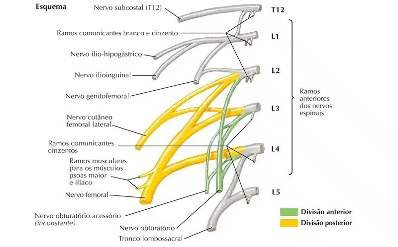
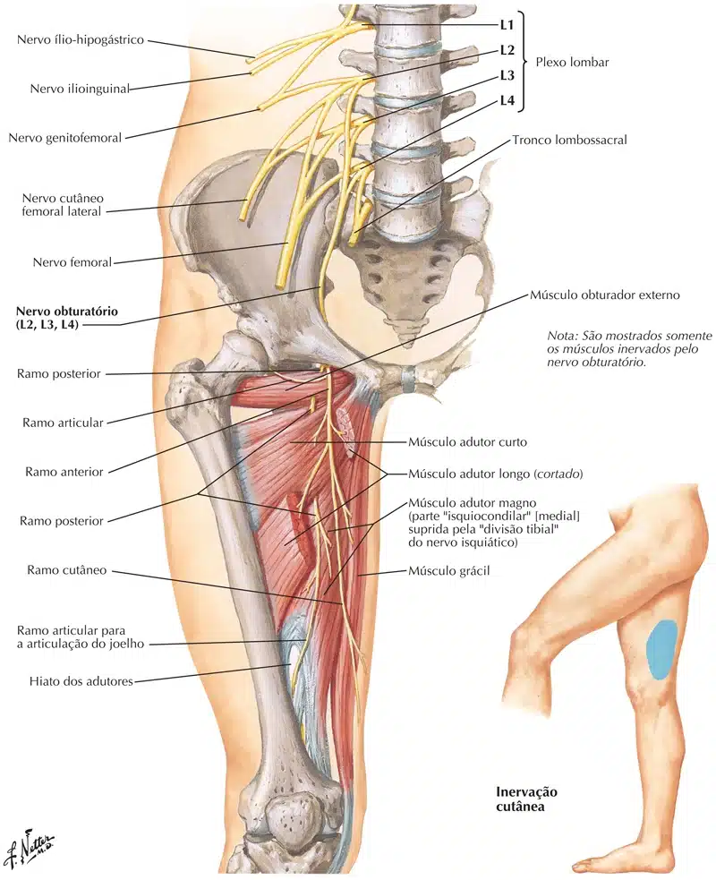
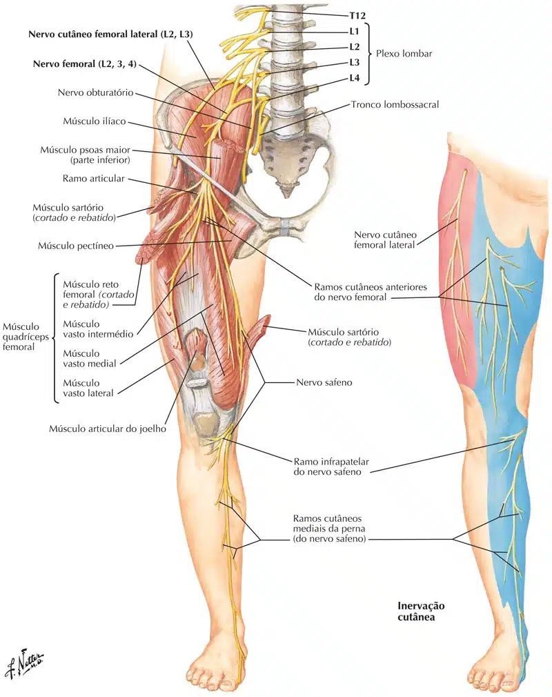
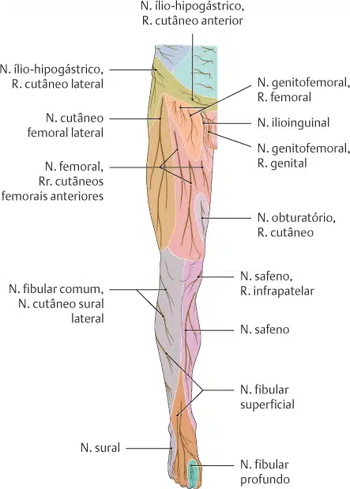

Os nervos do plexo lombar chegam ao membro inferior anteriormente à articulação do quadril e suprem, especialmente, a parede anterior da coxa.
Já, os nervos do plexo sacral seguem posteriormente ao quadril e inervam a parte posterior da coxa, a maior parte da perna e todo o pé.
O plexo lombar forma nervos que se dirigem para a parte inferior do tronco e para os membros inferiores.
Os nervos espinais lombares se dividem em ramos posterior e anterior após cruzarem os respectivos forames intervertebrais.
Os ramos posteriores inervam os músculos do dorso e pele sobrejacente enquanto os ramos anteriores projetam-se inferolateralmente para inervar a pele e músculos da região inferior do tronco e dos membros inferiores.
Os ramos anteriores de L1-L4 formam o plexo nervoso lombar, localizado anteriormente aos processos costiformes / transversos das vértebras lombares e profundamente ao músculo psoas maior.
Os ramos anteriores de L2, L3 e L4 dividem-se em partes anterior e posterior.
O plexo lombar apresenta uma organização mais simples em comparação ao plexo braquial e geralmente origina o tronco lombossacral e seis nervos:

Os nervos do plexo lombar chegam ao membro inferior anteriormente à articulação do quadril e suprem, especialmente, a parede anterior da coxa.
Enquanto os nervos do plexo sacral seguem posteriormente ao quadril e inervam a parte posterior da coxa, a maior parte da perna e todo o pé.
Os nervos do plexo lombar são:
1 – Nervo ílio-hipogástrico (L1; às vezes T12):
Inervação motora: oblíquo interno e transverso do abdome (partes inferiores de cada).
Inervação sensitiva: pele da região glútea póstero-lateral e região púbica.
2 – Nervo ílio-hipogástrico (L1):
Inervação motora: oblíquo interno e transverso do abdome (partes inferiores de cada).
Inervação sensitiva: pele da parte medial superior da coxa;
Pele na base do pênis e região ant. do escroto; ou pele do monte do púbis e lábios maiores (r. anterior).
3 – Nervo genitofemoral (L1-L2):
Inervação motora: m. cremaster (r. genital).
Inervação sensitiva: O ramo femoral supre a pele sobre o trígono femoral lateral; o ramo genital supre o escroto anterior ou os lábios maiores do pudendo.
4 – Nervo cutâneo femoral lateral (L2-L3):
Inervação motora: não tem.
Inervação sensitiva: pele das partes ant. e lat. da coxa até o joelho.
5 – Nervo femoral (L2-L4): este nervo passa pelo trígono femoral.
Inervação motora: mm. iliopsoas; pectíneo; sartório e quadríceps femoral.
Inervação sensitiva: Rr. cutâneos ant. = pele da face ant. da coxa;
N. safeno = superfície medial da perna até o maléolo medial (este nervo passa pelo canal adutor / de Hunter).
6 – Nervo obturatório (L2-L4): este nervo atravessa o forame obturado.
Inervação motora: mm. adutores longo, curto e magno; obturador externo, pectíneo e grácil.
Inervação sensitiva: pele da face distal e medial da coxa.


